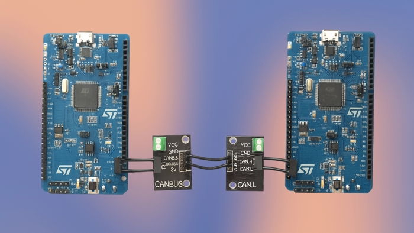
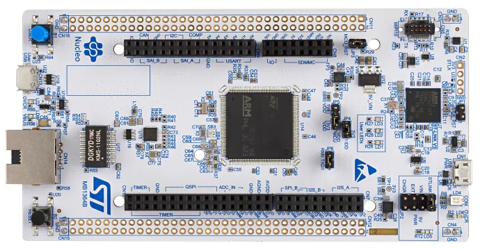
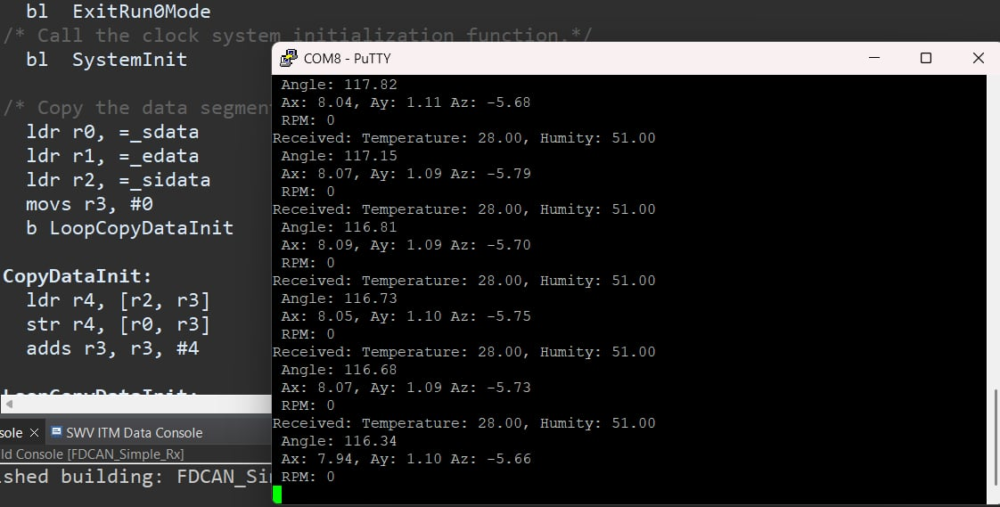
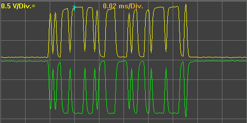
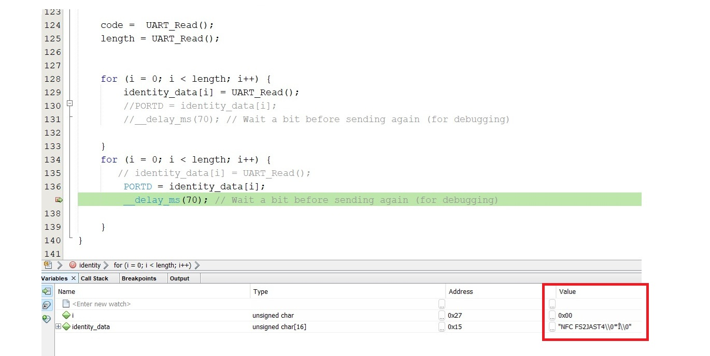
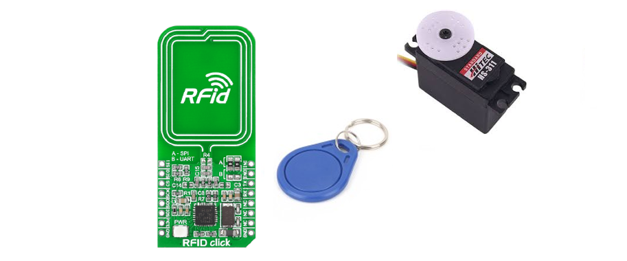
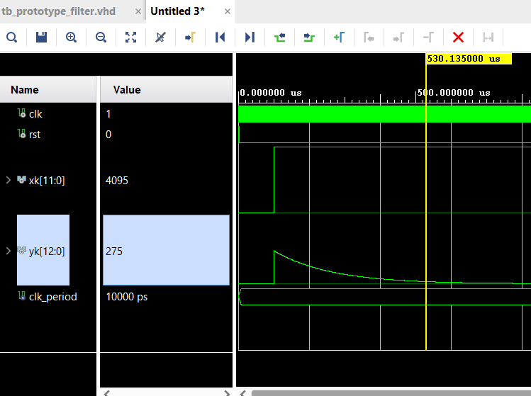
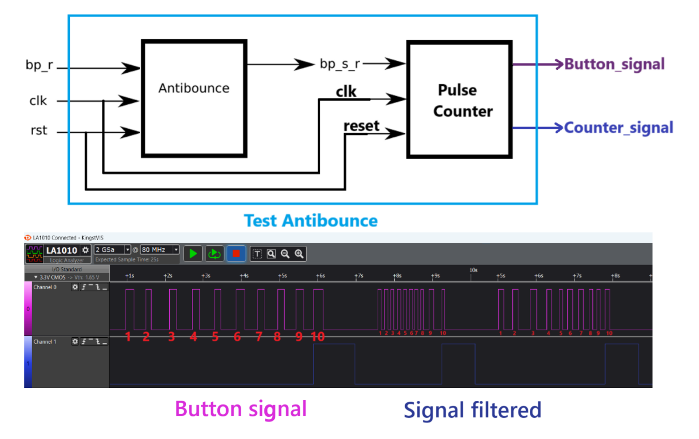

Projects
CAN BUS Communication in STM32
- In the telemetry team for the electric Formula Student vehicle, we needed bidirectional communication between two MCUs
- The challenge was to synchronize sensor data (speed, temperature, humidity, etc.) in real-time with low power consumption
- I implemented a CAN FD bus to establish communication between two STM32H7 boards
- Achieved stable transmission at 500 kbps with -1% data loss, crucial for dynamic testing




RFID Access Control System with PIC18F8722
- During the microcontroller lab, the challenge was to design an access control system using a PIC18F8722 microcontroller
- The goal was to design and implement a system that could read RFID codes from a badge and control a servo motor simulating door opening/closing
- I established USART communication with an RFID reader to receive badge codes and designed a timing routine to automatically close the door
- The system worked reliably, correctly validating authorized badges and operating the servo motor without errors


Frequency Meter
- Final project for Digital Systems course: implement a practical FPGA system integrating multiple VHDL modules
- Design a frequency meter capable of measuring signals between 1 Hz and 10 MHz, displaying values on a 7-segment display with 1-second refresh rate
- Designed an edge detector for counting input pulses via state machine. Created 1 Hz reference signal using clock dividers. Developed a synchronized counter to obtain frequency. Encoded binary data to BCD format for 7-segment display
- The meter measured frequencies in real-time with 1s refresh rate and adequate precision. Validated using function generator and display readings
Digital High-Pass Filter
- For Front-End Acquisition course: design digital acquisition system for optical sensor using FPGA
- Implement first-order high-pass digital filter to remove low-frequency noise, processing real-time data from FPGA's ADC
- Designed filter's mathematical function, discretized and programmed in VHDL with delay handling. Integrated module with ADC and validated using ramp and sawtooth signals
- Filter effectively removed low frequencies, producing clean square wave output. System worked in real-time with low logic resource usage

Button Debounce Filter
- Mechanical button produced bouncing causing multiple unwanted activations in FPGA system
- Task was to implement digital filter ensuring single activation per press
- Designed VHDL FSM combined with counter to measure signal stability time before validation. Tested in simulation and hardware using Vivado
- Achieved complete bounce elimination with validation after 20ms, low logic resource usage and stable system operation

Display Control
- Development of VHDL module to control 7-segment display on FPGA using switches as inputs
- Objective was to implement binary to 7-segment decoder in VHDL
- Designed VHDL module with 4-bit input and 7-bit output (segments). Assigned FPGA switches to inputs via pin constraints. Simulated and validated hardware operation
- Functional display controlled by switches. Modular code ready for integration in complex systems (counters, clocks, etc.)

Design and Implementation of Vertical Grain Packaging Machine - Thesis Project
- For my mechatronics engineering thesis, I undertook the complete design of a vertical packaging machine for granular products, focusing on industrial automation and mechanical manufacturing
- Task was to develop a functional machine from scratch, including mechanical design, control system programming, HMI designed in LabVIEW, and integration of pneumatic actuators, motors and thermal systems
- Together with my colleague André Cuvi, we designed and manufactured all mechanical components. Programmed a Delta DVP-ES2 PLC to control pneumatic cylinders, sealing heaters, three-phase dosing motor, and plastic feeding system using stepper motor with frequency drive. Implemented automatic forming, filling and sealing routines
- Machine operated automatically and stably, achieving precise and repeatable packaging. Project successfully integrated mechanical design, electrical control and automation, demonstrating complete industrial solution